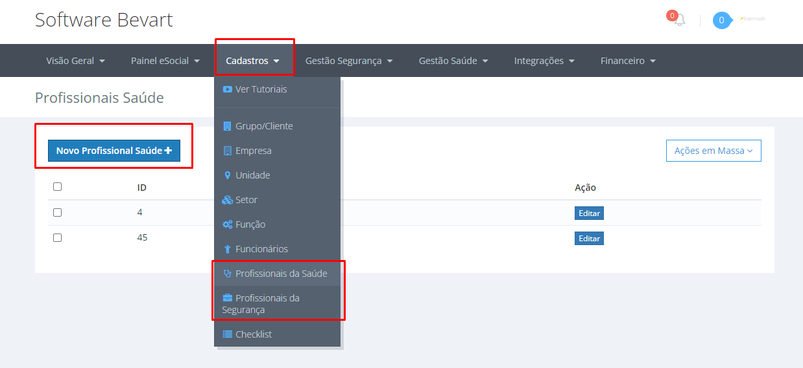
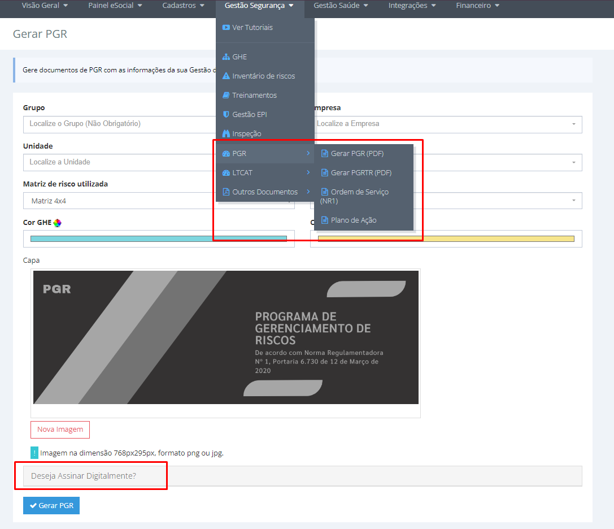
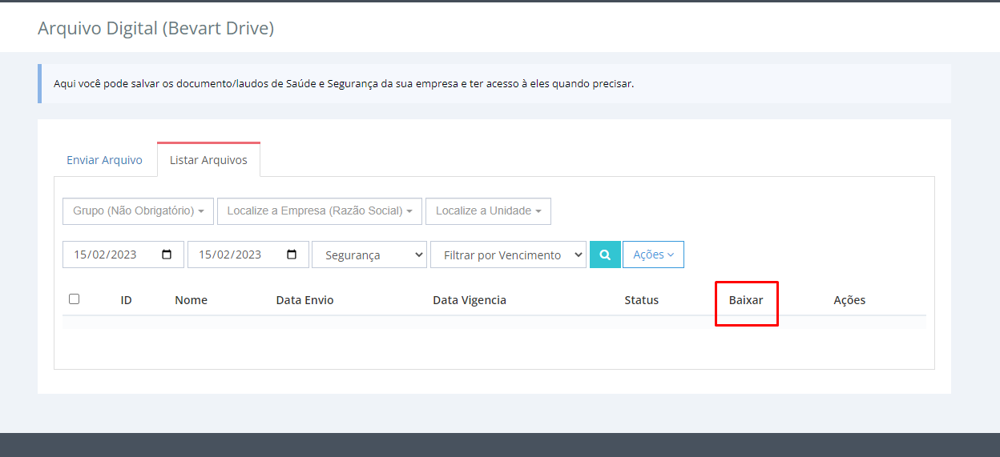
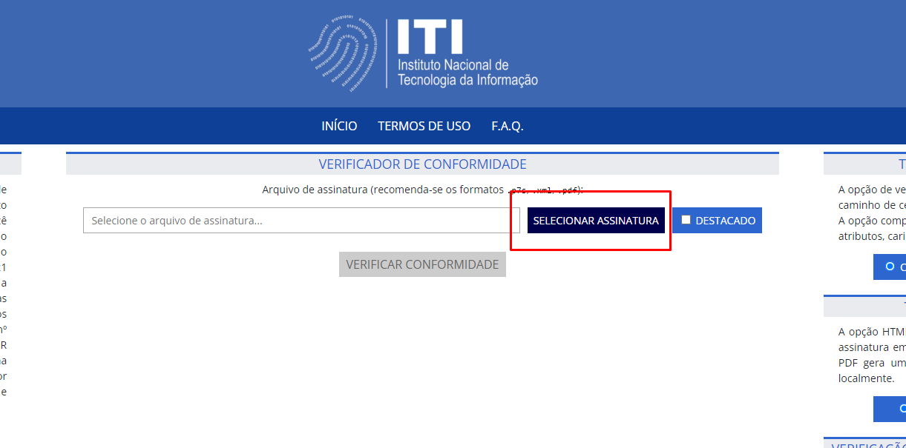
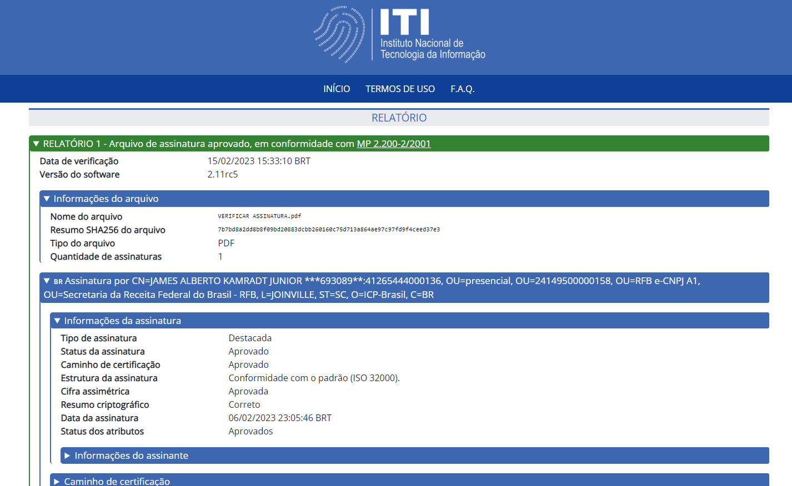

Como assinar o PDF de SST e validar a conformidade da assinatura
Certificado A1 no perfil do profissional, documento gerado e assinado no sistema, guarda automática no GED — e a conferência final no verificador oficial do governo.

O essencial em 30 segundos
- A assinatura exige certificado A1 cadastrado no perfil do profissional — é pessoal, não da empresa.
- PGR sai pela área de Segurança; LTCAT e PCMSO, pela área de Saúde.
- O documento assinado fica guardado no GED, anexado ao cadastro da empresa.
- A validação se faz no verificador do ITI, que é a fonte oficial.
Documento de SST sem assinatura válida é papel bonito. E o problema raramente aparece na entrega — aparece meses depois, quando alguém precisa provar que aquele laudo é autêntico e foi assinado por quem tem responsabilidade técnica pelo conteúdo.
O fluxo abaixo resolve as duas pontas: assinar corretamente e comprovar que a assinatura confere.
1. Cadastrar o certificado A1
O primeiro passo é ter o certificado no formato A1 registrado no perfil do profissional que vai assinar. O A1 é o certificado em arquivo, instalado no sistema; por ser pessoal, é ele que liga o documento à responsabilidade técnica de quem o emitiu.

2. Gerar e assinar o documento
Acesse a opção correspondente ao documento:
- PGR — na área de Segurança;
- LTCAT e PCMSO — na área de Saúde.


3. Guarda digital no GED
Depois de gerar, vá até as integrações e abra o GED. Localize pela empresa para baixar o documento anexado ao cadastro — a guarda digital fica organizada automaticamente, por empresa, sem depender de alguém salvar o arquivo na pasta certa.

Gerar, assinar e guardar sem trocar de ferramenta
PGR, LTCAT e PCMSO saem do mesmo cadastro, são assinados com o A1 do responsável e ficam arquivados por empresa.
Criar conta grátis4. Validar a assinatura
Para conferir se o documento foi assinado corretamente, use o verificador oficial do ITI: verificador.iti.gov.br. Envie o PDF e o serviço informa se a assinatura é válida, quem assinou e se o conteúdo foi alterado depois.

Valide um documento de cada tipo logo depois de configurar o certificado. É um teste de dois minutos que evita descobrir, meses e centenas de laudos depois, que a configuração estava errada.
Por que isso importa
- Integridade: alteração posterior à assinatura quebra a validação.
- Autoria: o A1 liga o documento ao profissional responsável.
- Guarda: o GED mantém o arquivo onde ele pode ser encontrado anos depois.
- Prova: a validação no ITI é verificável por qualquer terceiro.
Se o documento em questão é o PGR, veja também como elaborar, monitorar e gerar o PGR.
Perguntas frequentes
Qual certificado usar: A1 ou A3?
Para assinar os documentos dentro do sistema, o formato usado é o A1, cadastrado no perfil do profissional responsável pela assinatura.
Onde ficam os documentos depois de assinados?
No GED, acessível pelas integrações e organizado por empresa, com o arquivo anexado ao cadastro correspondente.
Como um terceiro confirma que o documento é autêntico?
Enviando o PDF ao verificador oficial do ITI, em verificador.iti.gov.br, que informa a validade da assinatura, o signatário e se houve alteração no conteúdo.
O que acontece se o PDF for editado depois de assinado?
A validação passa a acusar inconsistência: é exatamente esse comportamento que dá valor probatório ao documento assinado digitalmente.